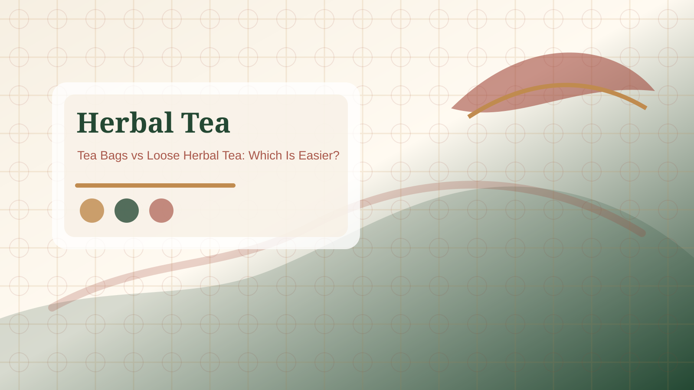

Buying basics
Use guides when you need a step-by-step comparison before choosing a product.
Use this resource hub to move from a label question to a buying guide, FAQ answer, scenario page, or product comparison.
Quick Answer: The resources hub organizes herbal tea bag information by label language, ingredient checks, caffeine wording, buying basics, and real use cases. Start here when you need context before choosing a product.

If your question is about a word on the box, start with tea terms by language or ingredient order. If your question is about use, start with scenarios. If your question is about product type, use the product pages. If your question is simple and direct, use the FAQ. This split keeps the site useful without forcing every answer into one long article.
Resources should make product pages easier to understand. A caffeine-free product page is more useful after you know the difference between naturally caffeine-free, decaffeinated, and herbal infusion. A gift product page is more useful after you know what packaging, serving count, and flavor range to check.
Herbal tea content can drift into health claims quickly. This resource hub focuses on labels, taste, packaging, preparation, and everyday buying context. It does not provide medical advice or promise wellness outcomes.
Use the library in stages. First, answer the blocking question: caffeine, ingredient order, language, gift suitability, tea-bag format, or routine fit. Second, move to the product or scenario page that matches the answer. Third, compare only the products that still fit after the label checks. This prevents a weak buying path where a reader jumps from a vague product name to a purchase without understanding the label. The best resource page should make the next click more specific, not louder.
The resource library should stay selective. A page belongs here when it answers a recurring label, buying, routine, or comparison question. Very narrow product notes should point to product pages, while broad beginner explanations should point to guides. This structure keeps the library useful for readers and avoids forcing unrelated tea topics into one long list.
Do not stay on the hub once the question is clear. If the issue is caffeine, open the caffeine FAQ or caffeine-free product page. If the issue is flavor, open a scenario or product guide. If the issue is language, open the terms reference. A hub page is successful when it helps the reader choose a narrower next page quickly.
Reference: NCCIH herbs and supplement safety overview.
Use guides when you need a step-by-step comparison before choosing a product.
Use FAQ pages when one wording or ingredient question is blocking the decision.
Use scenario pages when the product needs to fit a routine, office, gift, or flavor moment.
Start with the buying guide if you are comparing tea bags for the first time.
Use the caffeine-free label FAQ, then compare caffeine-free product pages.
No. They explain product labels, flavor, packaging, and preparation only.
The resources hub explains how to decide. Product pages compare product types and shopping checks.